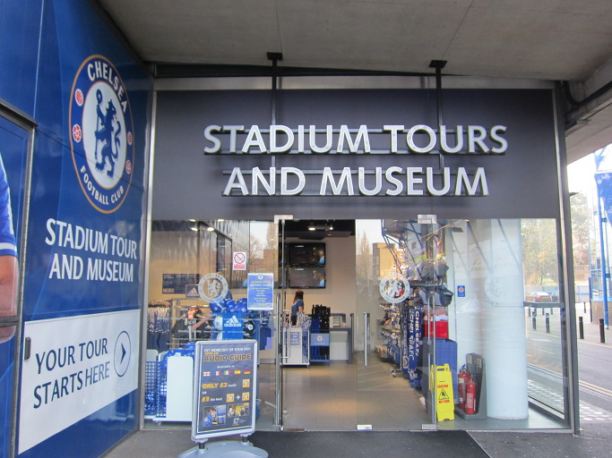
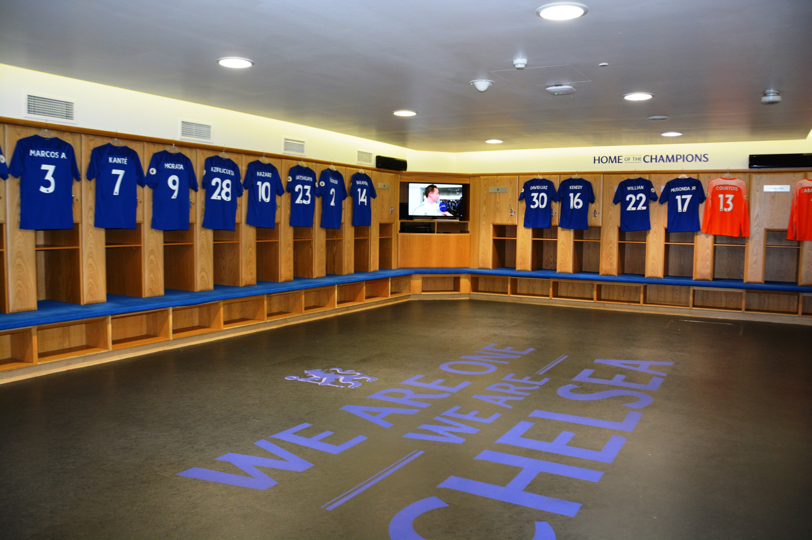
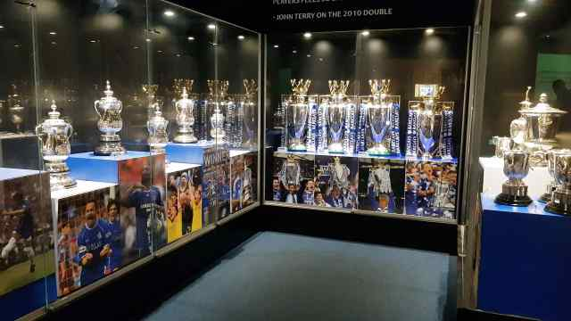

My Favorite Football Club Chelsea
The tour of Stamford Bridge is not to be missed. Home of the Blues, it’s a fun, informative and unforgettable experience enjoyed by sports fans of all ages from all over the world.
It was a great feeling being able to visit my club Chelsea fc stadium first time ever. The main reason I wanted to visit London was to see Chelsea fc playing live in the home ground. It was unforgettable moment for me.
Here's a link for the club's website.
Some of the images are below:
Image of Stadium Tours and Museum

Image of Chelsea fc dressing room
Image of Chelsea fc trophies cabinet